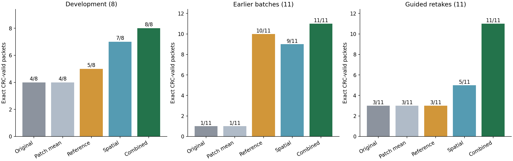
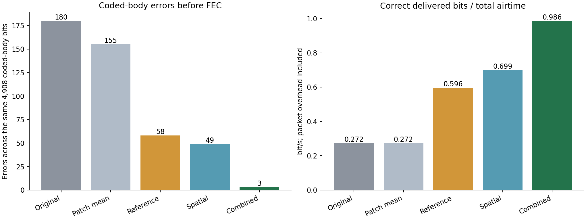
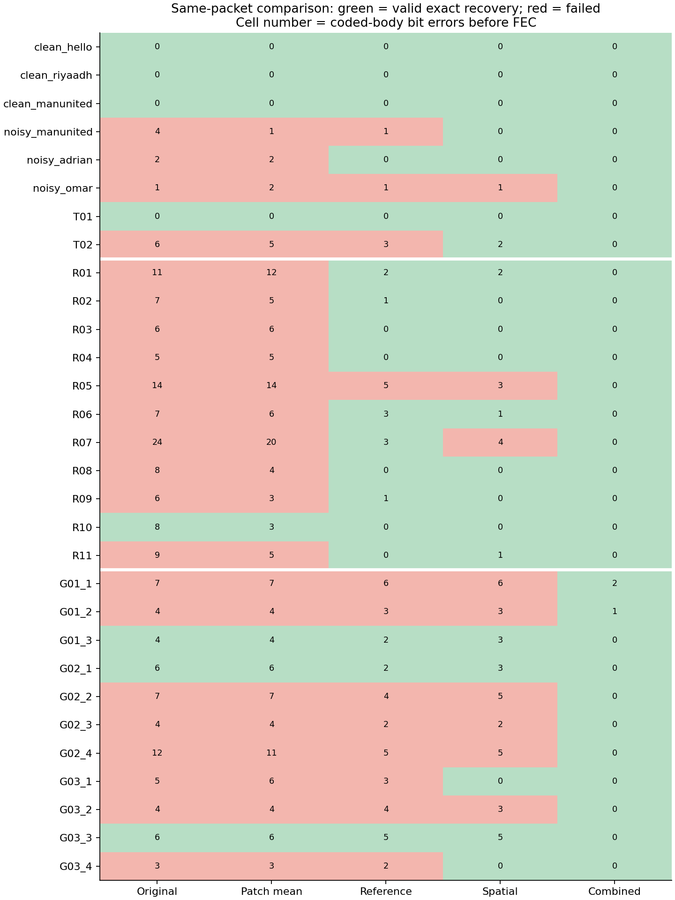
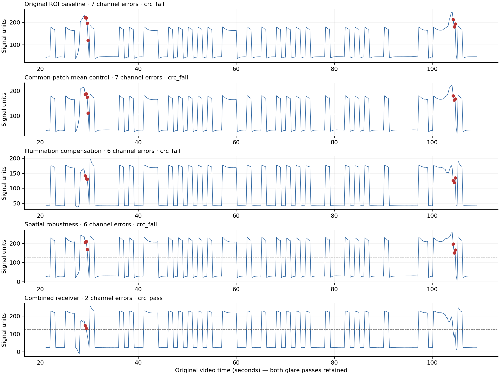

COMP0228 · physical video evidence · local study · 24 October 2026
All 30 archived baseline packet outcomes were reproduced exactly. Re-extracting the original ROI brightness from all 14 videos also matched every stored value exactly. The original decoder, packet format, CRC and error-correcting codes remain unchanged.
We retain the original small-ROI baseline and add a common-patch mean control. All three processing variants use the same larger interior patch as that control. This separates the effect of geometry from the effect of illumination compensation or spatial aggregation. Geometry was chosen from early previews before evaluating the new variants.
| Receiver | Development (8) | Earlier batches (11) | Guided retakes (11) | Total | Channel errors | Useful rate (bit/s) |
|---|---|---|---|---|---|---|
| Original ROI baseline | 4/8 | 1/11 | 3/11 | 8/30 | 180 | 0.272 |
| Common-patch mean control | 4/8 | 1/11 | 3/11 | 8/30 | 155 | 0.272 |
| Illumination compensation | 5/8 | 10/11 | 3/11 | 18/30 | 58 | 0.596 |
| Spatial robustness | 7/8 | 9/11 | 5/11 | 21/30 | 49 | 0.699 |
| Combined receiver | 8/8 | 11/11 | 11/11 | 30/30 | 3 | 0.986 |

Four non-flashing LCD rectangles provide reference brightness. Subtract each reference's public-preamble median from its current value, take the median of those four changes, and subtract 1 times that change from the patch signal. This estimates a shared lighting change. Local glare can affect patch and references differently, so compensation alone need not succeed.
Divide the same patch into 5×5 tiles. Calibrate each tile's dark and bright level using only the known public preamble. Aggregate the normalized tile signals with the 25th percentile. This suppresses positive glare outliers; dark occlusion can instead bias it downward. At least half the tiles must have preamble contrast of 20 grayscale levels or more.
Subtract the reference change from each tile, calibrate from the public preamble, then apply the same spatial quantile. The original ROI provides the shared optical clock for every variant; each variant has its own preamble-derived decision threshold and must independently parse its header and validate the payload CRC. This study isolates front-end processing and does not claim to rescue packets whose original preamble cannot be acquired.
Three residual channel errors remain in the combined results: G01_1 has two errors within one repetition-5 block, and G01_2 has one error within a Hamming word. Their existing decoders repair these errors. Thus preprocessing and error correction contribute separately to complete recovery.

The six pilot videos plus the earlier clean/noisy repetition videos form eight development packets. Candidate reference gains were 0.5, 1 and 1.5; candidate spatial quantiles were 0.25 and 0.5. Selection first protects clean controls, then minimizes failed packets, missing channel outputs and channel BER. The combination uses the independently selected component settings without an additional search.
| method | gain | quantile | recoveries | clean failures | channel errors | channel outputs |
|---|---|---|---|---|---|---|
| Original ROI baseline | 1.0 | 0.50 | 4/8 | 0 | 13 | 8 |
| Common-patch mean control | 1.0 | 0.50 | 4/8 | 0 | 10 | 8 |
| Illumination compensation | 0.5 | 0.50 | 4/8 | 0 | 8 | 8 |
| Illumination compensation | 1.0 | 0.50 | 5/8 | 0 | 5 | 8 |
| Illumination compensation | 1.5 | 0.50 | 6/8 | 1 | 3 | 7 |
| Spatial robustness | 1.0 | 0.25 | 7/8 | 0 | 3 | 8 |
| Spatial robustness | 1.0 | 0.50 | 4/8 | 0 | 10 | 8 |
| Combined receiver | 1.0 | 0.25 | 8/8 | 0 | 0 | 8 |
Gain 1.5 creates a clean-control failure, so it was rejected despite a higher overall development recovery count. Settings were frozen at 2026-10-24T21:21:19.390619+00:00 before computing new front-end outcomes on either later batch group. Their videos and original baseline results had already been inspected. Describe this as evaluation with frozen settings on previously inspected recordings, not blind validation on an untouched test set.
Rows compare receiver variants on the same physical packet. These are paired re-analyses, not additional independent transmissions. A failed or missing output stays in the packet-failure count and contributes zero useful delivered bits. Payload BER is reported only where a payload exists; it does not replace CRC-valid packet success.

G01_1 is the MANUNITED repetition-5 case. It includes the extra glare pass near 104 seconds. Red markers identify wrong channel bits only after decoding, using the saved transmission log. Signal units differ after tile normalization, so compare decisions relative to each threshold rather than absolute plotted amplitudes.

The common-patch mean control recovers 8/30, so geometry alone does not explain the combined receiver's improvement. The isolated components recover 18/30 and 21/30; combining them recovers 30/30 here. The combined model has zero remaining message-bit errors on this dataset. Current evidence supports complementary benefits from reference compensation and spatial processing.
Limits: small selected dataset; related packets share videos; manual per-video geometry; varying glare and occasional occlusion; baseline-dependent synchronization; no unseen-scene guarantee. No automatic ROI tracking, real-time camera performance or future success probability was established. Complete saturation or obstruction of all useful pixels can destroy the signal. These paired receiver comparisons do not make the physical coding experiments identical in noise conditions.
Open Receiver_Comparison.ipynb and run top to bottom; it uses cached numeric features and performs no hardware actions. Each replay verifies feature-file hashes, recorded source-video hash consistency, frozen geometry and receiver source. It does not reread and hash the large original videos. Re-extracting pixels is an explicit optional command, not part of Run All.
150 method/packet result rows · Summary metrics · Frozen settings · Validation · Development geometry · Evaluation geometry
The next separate coursework task is the controlled coding study: independent versus burst errors and interleaving, clearly labelled as simulation and interpreted alongside these physical results. All current recordings and results remain local.